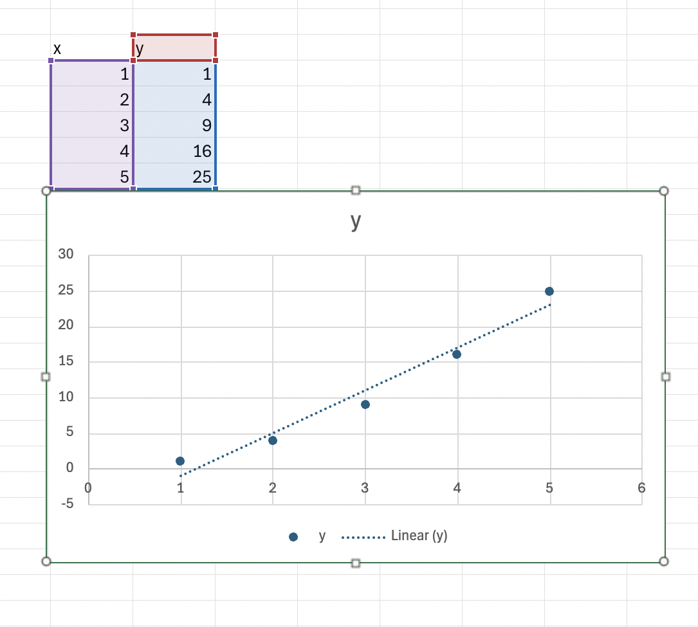
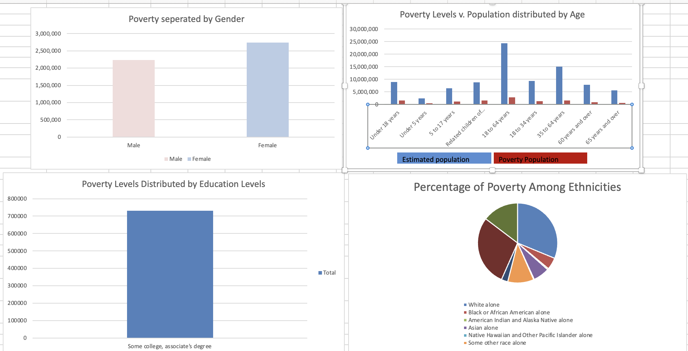
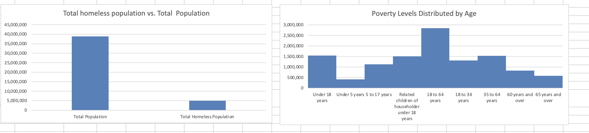
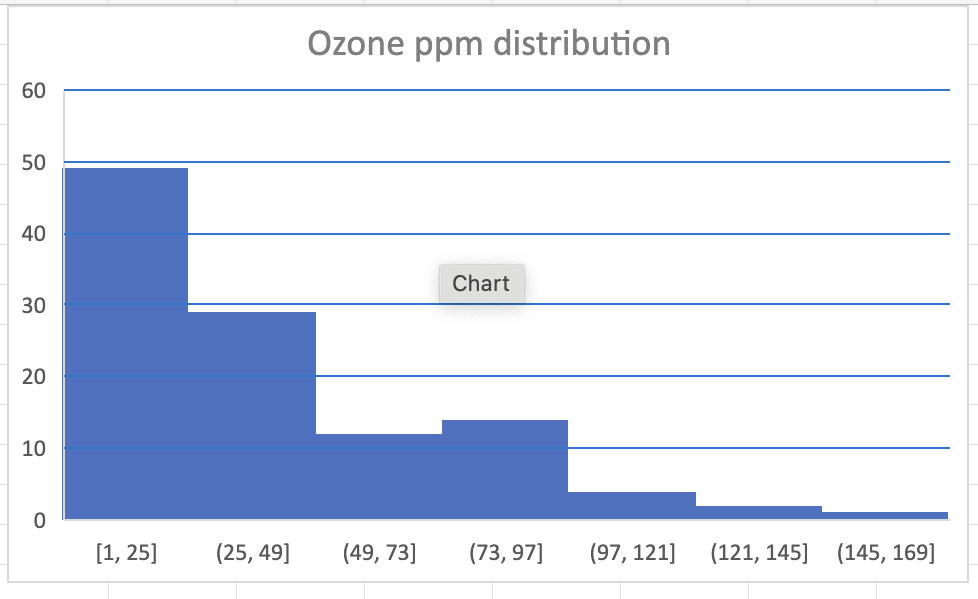
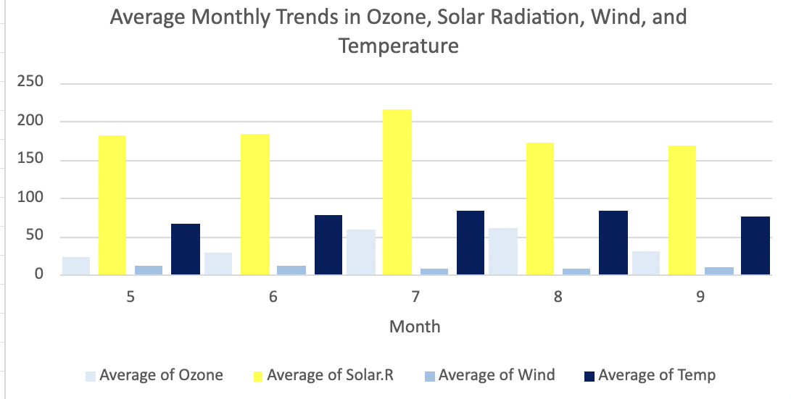
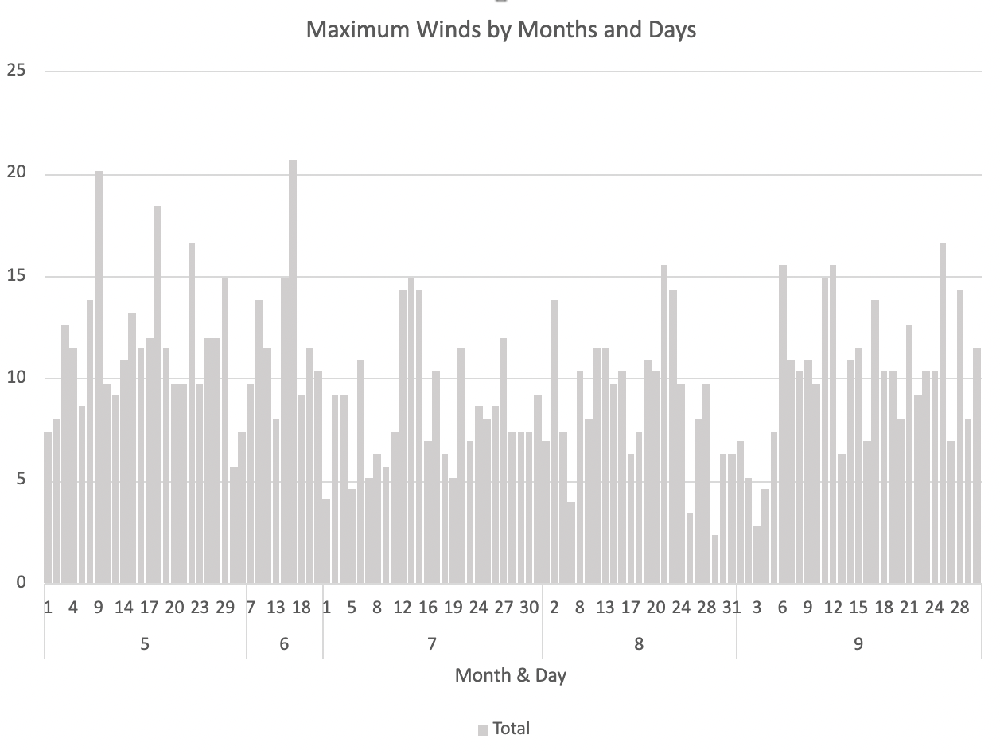
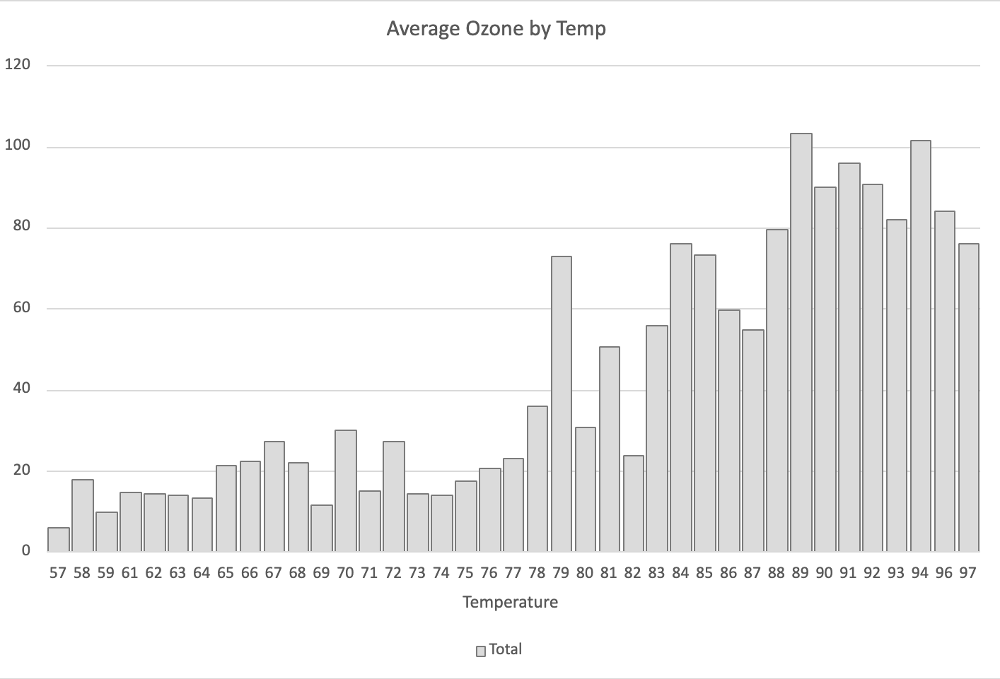
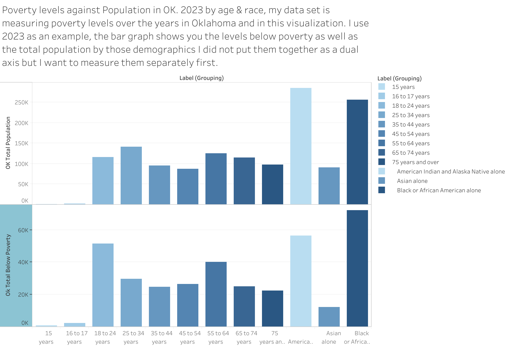
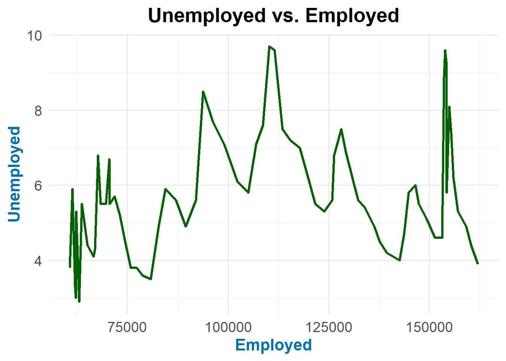

Tutorial on excel function, sum,average. Go here <
Cell is…… column is… row is….
4.1.1.1 Basic Functions
sum =sum(cell:cell)
Scatter Plot Insert graph by the insert tab adding a screenshot into a quarto

4.1.1.2 Our own document
mtcars
4.1.1.3 Using the x,Census Data
4.1.1.4 Description
It is a census of the poverty levels in California in the year of 2018
4.1.1.5 Format
This data has 63 rows and 4 columns. [1] Label -> categorical [2]population estimate -> numerical [3]below poverty population estimate -> numerical [4]percent below poverty -> percentage
#3 details Label - categorizing of population by different variables i.e age, ethnicity, race and sex population estimate - calculation of total population by categories under label below poverty population estimate- calculation of total population below poverty levels below poverty by categories under label percentage - calculation of percent of total population divided by total population below poverty
I removed the ratios as it only had the total popualtion seperated by age which was just a reiteration of the first few rows
there was an option of including the marginal error and I chose against that. I did not believe it was vital in explaining my data.
4.1.1.7 Explanation
This data is has 71 rows, which divides my data into groups that are in the category of age, sex, race,highest level of education,employment status, work experience,and UNRELATED INDIVIDUALS FOR WHOM POVERTY STATUS IS DETERMINED
This data is has 4 columns that are filled with label and three estimate, each estimate is separated into the total in the group identified in the row and the amount that is below poverty as well as the percentage of the amount below poverty compared to the total in the category highlighted in the rows.
  The above are the visualizations I chose to do to explain my data. The first is the distribution of poverty levels by gender to get a better understanding of the poverty levels in each gender before we break it up even further
The second is by age and I chose to include the overall population of each age group to understand the poverty levels against the overall population
I also then made a pivot table chart with the education levels which makes the chart interchangeable and I can single out each education levels poverty rate
The 4th is among ethnicity if I continue using this data set the poverty among ethnicity is very important to understand and I also used a pie chart because it was the easiest to see which ethnicity has the most and compare them against one another.
Total homeless population against the total population just helps understand the overall populations of both before the deep dive
Lastly i just did the poverty levels against age without the total population because I believe age is the best way to describe the poverty levels.
4.2 Week 2
4.2.0.1 Histograms
I am using the air quality dataset, which is a measurement in New york from the months May to September 1973
4.2.0.2 Format
this data has 153 observation and 6 variables but after cleaning it has 112 observations and six variables
4.2.0.3 Source
I got this data from d2l which was obtained from the New York State Department Of conservation
I use excel to clean the data, remove all the NA which I used the filter tab to achieve.
  This explains the average of ozone,solar,wind and temp pver the months which gives us a good idea of of which month was the highest and which had the stongest pull through the months.

I chose maximum winds by the months and day to see their trend lind and which month going into specifically what day had the highest and lowest.
 I also did the average ozone by temp whichb gives an idea of what was happening in the ozone by different temps
4.3 Week 3
4.3.1 Wednesday
Puromycin was my data set which is the study of the reaction verus the substrate concentration in an enzymatic reaction involving untreated cells or cells treated with Puromycin.The experiment was conducted once with the enzyme treated with Puromycin, and once with the enzyme untreated.
This dataset has 23 rows and 3 columns
conc -> a numeric vector of substrate concentrations (parts per million-ppm)
rate/velocity -> a numeric vector of instantaneous reaction rates, which was calculated from conc (counts/min/min)
-Shae plans to work on a dashboard based on poverty data for specifically the state of oklahoma between Friday and Saturday-
4.3.2.1 Using the x,Census Data
4.3.2.2 Description
It is a census of the poverty levels in Oklahoma in the year of 2023
4.3.2.3 Format
This data has 6 fields and 69 rows [1] Label -> categorical [2]population estimate -> numerical [3]below poverty population estimate -> numerical [4]percent below poverty -> percentage
#3 details Label - categorizing of population by different variables i.e age, ethnicity, race and sex population estimate - calculation of total population by categories under label below poverty population estimate- calculation of total population below poverty levels below poverty by categories under label percentage - calculation of percent of total population divided by total population below poverty
---------------------------------------------------------------------------
FileNotFoundError Traceback (most recent call last)
Cell In[14], line 1
----> 1 df = pd.read_csv('path_to_file.csv')
File ~/venv477/lib/python3.11/site-packages/pandas/io/parsers/readers.py:1026, in read_csv(filepath_or_buffer, sep, delimiter, header, names, index_col, usecols, dtype, engine, converters, true_values, false_values, skipinitialspace, skiprows, skipfooter, nrows, na_values, keep_default_na, na_filter, verbose, skip_blank_lines, parse_dates, infer_datetime_format, keep_date_col, date_parser, date_format, dayfirst, cache_dates, iterator, chunksize, compression, thousands, decimal, lineterminator, quotechar, quoting, doublequote, escapechar, comment, encoding, encoding_errors, dialect, on_bad_lines, delim_whitespace, low_memory, memory_map, float_precision, storage_options, dtype_backend)
1013 kwds_defaults = _refine_defaults_read(
1014 dialect,
1015 delimiter,
(...)
1022 dtype_backend=dtype_backend,
1023 )
1024 kwds.update(kwds_defaults)
-> 1026 return _read(filepath_or_buffer, kwds)
File ~/venv477/lib/python3.11/site-packages/pandas/io/parsers/readers.py:620, in _read(filepath_or_buffer, kwds)
617 _validate_names(kwds.get("names", None))
619 # Create the parser.
--> 620 parser = TextFileReader(filepath_or_buffer, **kwds)
622 if chunksize or iterator:
623 return parser
File ~/venv477/lib/python3.11/site-packages/pandas/io/parsers/readers.py:1620, in TextFileReader.__init__(self, f, engine, **kwds)
1617 self.options["has_index_names"] = kwds["has_index_names"]
1619 self.handles: IOHandles | None = None
-> 1620 self._engine = self._make_engine(f, self.engine)
File ~/venv477/lib/python3.11/site-packages/pandas/io/parsers/readers.py:1880, in TextFileReader._make_engine(self, f, engine)
1878 if "b" not in mode:
1879 mode += "b"
-> 1880 self.handles = get_handle(
1881 f,
1882 mode,
1883 encoding=self.options.get("encoding", None),
1884 compression=self.options.get("compression", None),
1885 memory_map=self.options.get("memory_map", False),
1886 is_text=is_text,
1887 errors=self.options.get("encoding_errors", "strict"),
1888 storage_options=self.options.get("storage_options", None),
1889 )
1890 assert self.handles is not None
1891 f = self.handles.handle
File ~/venv477/lib/python3.11/site-packages/pandas/io/common.py:873, in get_handle(path_or_buf, mode, encoding, compression, memory_map, is_text, errors, storage_options)
868 elif isinstance(handle, str):
869 # Check whether the filename is to be opened in binary mode.
870 # Binary mode does not support 'encoding' and 'newline'.
871 if ioargs.encoding and "b" not in ioargs.mode:
872 # Encoding
--> 873 handle = open(
874 handle,
875 ioargs.mode,
876 encoding=ioargs.encoding,
877 errors=errors,
878 newline="",
879 )
880 else:
881 # Binary mode
882 handle = open(handle, ioargs.mode)
FileNotFoundError: [Errno 2] No such file or directory: 'path_to_file.csv'
4.5 Week 5

4.6 Week after fall break
4.7 Second Semester Schedule
All charts made in r studio or shiny and 1-3 sentence summary with each visualization
Nov 2: create a line chart comparing year with civilian labor force percent
Nov 9: create a stacked bar chart comparing employed agriculture and employed nonagricultural industries
Nov 16: create a line plot comparing year vs unemployed percent
Nov 23: create a dot plot comparing civilian labor force total and not in labor force
Nov 30: create a pie chart comparing workforce distribution in a specific year
(For this weeks assignment, everyone needed to find a dataset from our datasource and give a summary about it.)
The dataset I chose is titled “Household Data Annual Averages” and it tracks the employment status of the civilian noninstitutional population in the U.S. from 1948 to the present. It includes various metrics in thousands of individuals, such as:
Civilian Noninstitutional Population: Total number of people aged 16 and over not in military or institutional settings.
Civilian Labor Force: Individuals who are either employed or unemployed, represented as a percentage of the population.
Employment and Unemployment: Counts and percentages of employed and unemployed individuals, differentiated by agriculture and nonagricultural industries.
Not in Labor Force: Number of people not participating in the labor market.
The dataset highlights trends in labor force participation, employment rates, and unemployment over the decades, showing changes in economic conditions and labor market dynamics. For example, it reflects fluctuations in employment rates during economic recessions and expansions. The dataset is subject to revisions due to updates in population controls, which may impact historical comparisons.
4.8 Oct 28th
4.9 Introduction
This document presents a visualization comparing the percentage of employed individuals and the unemployment rate over time. The analysis uses historical data on employment and unemployment metrics to provide insights into labor market dynamics.
4.10 Data &Library Load
4.11 Introduction
This document presents a visualization comparing the percentage of employed individuals and the unemployment rate over time. The analysis uses historical data on employment and unemployment metrics to provide insights into labor market dynamics.
4.12 Data &Library Load
library(dplyr)
Attaching package: 'dplyr'
The following objects are masked from 'package:stats':
filter, lag
The following objects are masked from 'package:base':
intersect, setdiff, setequal, union
library(readxl)library(tidyr)library(readr) # If you're reading CSV or similar formatslibrary(ggplot2)data2 <-read_excel("LineGraph.xlsx")
ggplot(data_clean, aes(x = Employed_Total, y = Unemployed_Percent)) +geom_line(color ="darkgreen", size =1.2) +# Change line colorlabs(title ="Unemployed vs. Employed",x ="Employed", # Updated x-axis titley ="Unemployed"# Updated y-axis title ) +theme_minimal(base_size =15) +# Increase base font sizetheme(plot.title =element_text(hjust =0.5, size =20, face ="bold", color ="black"), # Center title, change font size and coloraxis.title.x =element_text(size =16, face ="bold", color ="#0072B2"), # X-axis titleaxis.title.y =element_text(size =16, face ="bold", color ="#0072B2"), # Y-axis titleaxis.text =element_text(size =14) # Axis text size )
Warning: Using `size` aesthetic for lines was deprecated in ggplot2 3.4.0.
ℹ Please use `linewidth` instead.
Warning: Removed 2 rows containing missing values or values outside the scale range
(`geom_line()`).

4.15 Summary of Visualization
This line chart illustrates the relationship between the percentage of employed individuals and the unemployment rate over time. Specifically, it compares the Employed Percentage (representing the proportion of the civilian labor force that is employed) against the Unemployed Percentage (indicating the proportion of the labor force that is unemployed).
Key Points: Trends Over Time: The chart shows how both employment and unemployment rates have evolved from the data’s starting year to the present. Inverse Relationship: Generally, as the percentage of employed individuals increases, the unemployment rate tends to decrease, indicating an inverse relationship between these two metrics. Economic Insights: The visualization provides insights into economic conditions and labor market dynamics, highlighting periods of growth and recession based on employment trends.